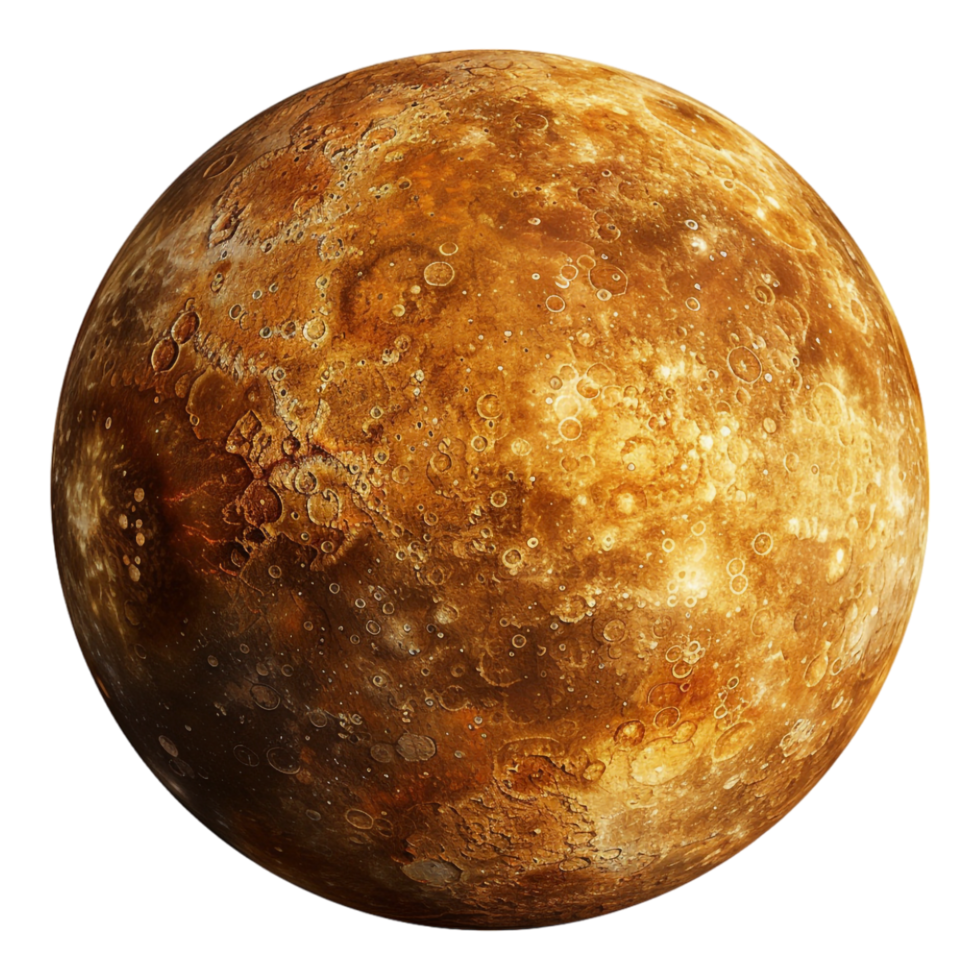

Sobre o Mercurio
Mercúrio – O Mensageiro dos Deuses
Mercúrio é o planeta mais próximo do Sol e também o menor do Sistema Solar. Sua superfície é coberta de crateras, lembrando a Lua, resultado de bilhões de anos de impactos cósmicos. Por não ter atmosfera significativa, sua temperatura varia drasticamente: chega a ultrapassar 400 °C durante o dia e cair a -180 °C à noite. É um planeta silencioso e inóspito, mas fascinante para os astrônomos.
Curiosudades
- Rotação lenta: Um dia em Mercúrio dura 59 dias terrestres. Isso significa que o Sol nasce muito raramente por lá.
- Variações extremas: Nenhum outro planeta tem uma diferença de temperatura tão grande entre o dia e a noite.
-
Núcleo gigante: Mercúrio tem um núcleo metálico que ocupa 85% de seu raio –
muito maior, proporcionalmente, que o da Terra.